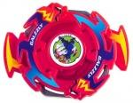

Galzzly
Note: Since this article was published, significant new and more accurate information has come to light, and as a result, this article must be updated. Please do not take all of the information here as the truth, as more extensive testing on the parts of this Beyblade has since provided information which conflicts with and/or expands upon the understanding of these parts this article was based upon. Updates will be posted on the main page when completed.
| Galzzly | |
|  | |
| Number: | A-9 |
|---|---|
| System: | 5-Layer |
| Type: | Attack |
Contents
Attack Ring (AR): War Bear
- Weight: 8 grams
The Attack Ring of Galzzly, War Bear, takes the shape of two Bear heads, followed by three closely arranged protrusions with a pickaxe-like appearance. In right spin, the heads of the AR are the main impact point, providing some blunt Smash Attack, but causing a lot of recoil in the process. The other protrusions are too closely packed together to have any noticeable effect. In left spin, the leading spike has some Smash Attack ability, however it is not particularly strong, and this spike is rather fragile, so overall it is not worth using.
As such, War Bear itself is largely useless, and it is only hindered by the inclusion of a Free-Spinning Sub Ring, which adds recoil and dampens the attack. Even with less obstructive SARs, it still has no competitive value.
Sub-Attack Ring (SAR): War Bear SAR
War Bear also has a free spinning Sub-AR, in the shape of two large, pickaxe-like protrusions. The leading edge in right spin is large and blunt and due to the free spinning nature, largely ineffectual, only serving to slow down the beyblade it is attached to without adding any amount of Smash Attack. In left spin, the contact point is much sharper, but due to its free-spinning nature, again mostly useless.
That said, this part does have some use. In left spin, the contact point is excellently shaped for Smash Attack, though this is usually not helpful because, being free spinning, it cannot deliver a solid hit. However, a few setups exist which fix it in place, allowing it to be used successfully in Smash Attack customization.
Use in Smash Attack Customization
An example combination which fixes War Bear?s SAR in place and uses this to execute powerful Smash Attack is as follows:
- AR: Dragon Breaker (Gaia Dragoon V)
- S-AR: War Bear (Galzzly)
- WD: Wide Defense
- SG: Neo-Left (MG Core)
- BB: SG Metal Flat Base (Gaia Dragoon V)
While the use of two relatively high Recoil, rather unpopular AR parts may seem nonsensical, these two have excellent synergy: Dragon Breaker has a lot of power, but the lack of suitable Sub-ARs and some recoil issues means it sees little use. However, because it is a relatively thick AR, it is able to fix the War Bear Sub-AR in place, sandwiching the Sub-AR against the Weight Disk, and with a weight disk like Wide Defense, this creates enough friction to allow it to deliver solid hits with relatively little movement.
The War Bear SAR also improves the consistency of Dragon Breaker, reducing the recoil issues, improving the overall consistency of hits. As a result, while this combination does have some recoil, it is far less than that of OHKO ARs such as Whale Crusher (Seaborg 2) and Cybernetic Dragoon (Cyber Dragoon). Furthermore, the excellent range of the two means that they can easily make contact with opponents; where other Attack Rings would have near misses, this setup usually makes contact.
SG Metal Flat 2 increases the stamina of the combination and gives good aggressive movement, and any control issues are mitigated by the prodigious range of the AR+SAR setup. Wide Defense fixes the SAR in place and promotes aggressive movement, and, combined with an MG Core, has enough weight to control recoil.
For maximum potency, the War Bear SAR should be arranged so that the protrusion of the SAR is sitting above the red-stickered section of Dragon Breaker. It does shift somewhat after delivering hard hits during battle, and should be re-adjusted between rounds. The Weight Disk should sit with the flat side against the base, fixing the Sub-Ring in place.
Spin Gear (SG): Right SG
See Right SG
Weight Disk (WD): Eight Wide
See Eight Wide.
Blade Base (BB): SG Flat
See SG Flat.
Other Versions
- A-63 Paint Kit (White)
- BBA Attacker (Blue, comes with 8 Heavy instead of 8 Wide, as well as alternate decals.)
- Galzzly - Random Booster Vol. 4 (Clear Red)
- Galzzly - Random Booster Vol. 5 (Blue)
- Galzzly - Random Booster Vol. 5 (Grey)
- Galzzly - Random Booster Vol. 5 (Mustard Yellow)
- Galzzly - Random Booster Vol. 6 (Dark Green)
- Galzzly - Random Booster Vol. 6 (Yellow)
- Galzzly - Random Booster Vol. 7 (Grey)
- Galzzly - Random Booster Vol. 7 (Chestnut)
- Galzzly - Hyperblades Version (Periwinkle/Purple)
- Galzzly - Metal Master Version (Metallic Red w/ Red Plated 8 Wide)
Gallery
Galzzly - Hyperblades Version
-
Galzzly Hyperblades Version
Overall
While Galzzly's Sub Ring has some use, the rest of the parts have none, and it is not a worthwhile purchase unless one wishes to experiment with a wider range of attackers. Outside of that, it is only worth buying for collection purposes.